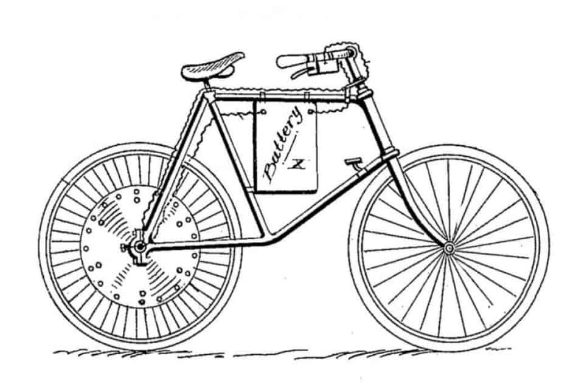
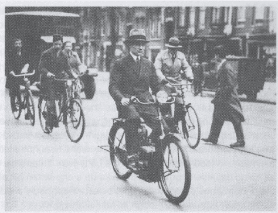
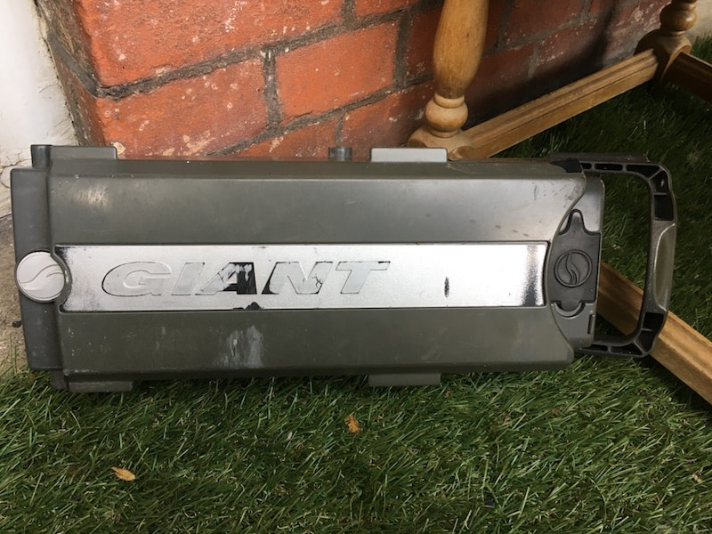
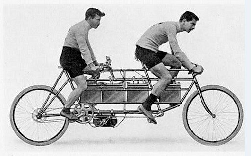
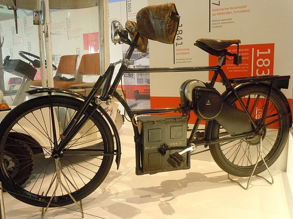
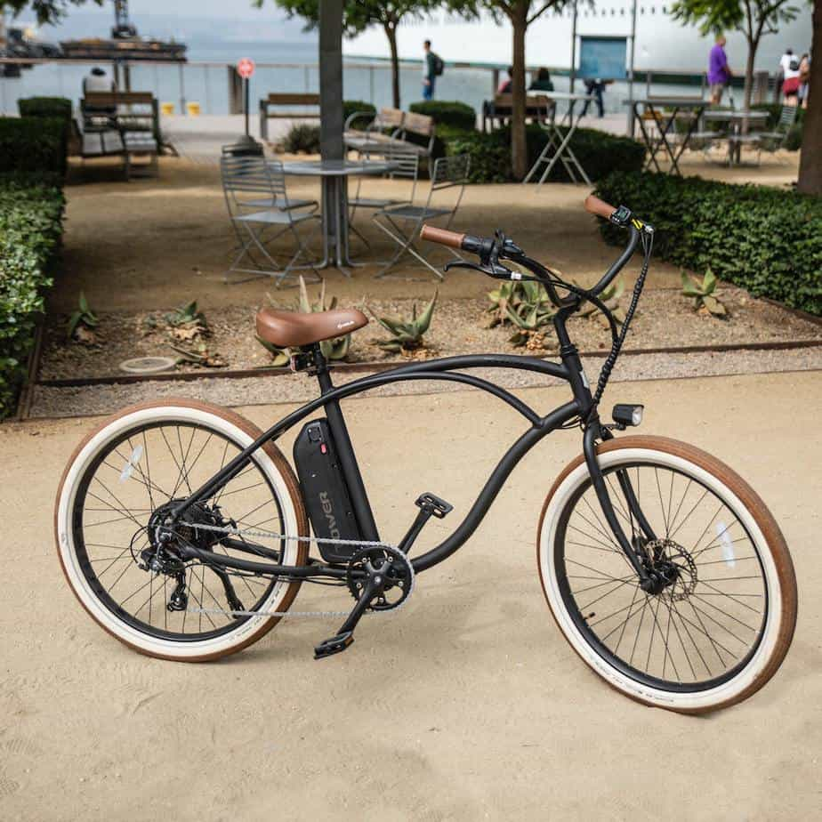

The History of Electric Bikes
A detailed history of electric bikes. From 1895 to modern E-Bikes. Learn everything about the history of electric bikes at eBikeBible.com.

What is an E-Bike?
The electric bike is a combination of ages-old engineering and modern technology. Improvements in batteries have made it possible to run everything from cars to bikes for long distances and to then recharge their batteries relatively quickly.
According to Wikipedia, “An electric bicycle also known as an e-bike is a bicycle with an integrated electric motor which can be used for propulsion.”1 In other words, an electric bike uses a motor, powered by electricity from a battery, to assist the rider in reaching their desired destination.
Traditionally, electric bikes were used primarily by the elderly and disabled as a convenient means of transportation. With the assistance of the electric motor, cycling becomes an option for those who are physically unable to cycle a conventional pedal bike.
Today, however, electric bikes come in all shapes and sizes and there is a rapidly expanding consumer market for them. Not only are e-bikes useful, but they are now considered, well…cool, trendy, fashionable. They are the ‘in’ thing.
Broadly speaking, there are two types of e-bike. The first category typically travels up to 25-30 km/h (or 16-20 mph, if you’re a Brit or an American). While the second type, often called speed e-bikes, can travel up to 45 km/h, or even faster.
Depending on which country you are cycling in, these two categories can fall under different sections of the law. If you are unsure of the law in your country/region, choose a first category ebike with a lower speed limit as these are normally legal.
Within these two categories, there are all types of e-bikes, including city e-bikes, trekking e-bikes, e-mountain bikes, e-folding bikes, e-cargo bikes, and so on. There are even commercial e-bikes used by transport and delivery businesses. I spent a year working for a B2B food delivery company riding a refrigerated e-cargo bike. Despite its weight, the bike was fast, manoeuvrable, and caused less pollution than the delivery vans that normally carried the produce.
Who Invented the E-Bike?
Given the current hype around e-bikes,it might surprise you to learn that electric bikes are nothing new.
An American inventor named Ogden Bolton Junior patented a battery-powered bike in 1895. Nope, that’s not an error; the first ebike was designed in 1985! Bolton’s design consisted of attaching a DC motor to the hub of a bike’s rear wheel, while the battery hung from the frame.
Simply put, a DC (Direct Current) motor turns electrical energy into mechanical energy through rotation caused by electromagnetism.
Then, in 1897, Hosea Libbey patented a bike with not one, but two electric motors. The motor was designed to fit into the hub of the crankset, a design that was replicated in the 1990s by Giant Bicycles for their LaFree e-bike.
In 1897, an American company, Humber, presented an electric tandem during a show. The bike was put to use several years later during a 24hr bike race in Paris. The e-tandem was to set the pace for the other cyclists, however, it didn’t work because a few years later races were being led by vehicles with combustion engines. What it does tell us is that the combustion engine was not always everyone’s first choice for facilitating transportation (probably because they were noisy and smelly), but that without alternative technology they proved to be the most reliable at the time.

E-Bikes in the 1930s
More e-bike patents were submitted in 1898 and 1899, but it wasn’t until the 1930s that e-bikes became anything more than a whacky invention. Several European companies began producing e-bikes for popular consumption. In 1932, Netherlands-based Phillips teamed up with Simplex, a company that made standard pedal bikes, to create an e-bike. The Phillips Simplex e-bike ran on a 12v battery and is featured in the picture below.
A few years later, Phillips gave e-bikes a second go but this time teamed up with well-known bike manufacturer Gazelle. Unfortunately, the Phillips-Gazelle e-bike was another flop, selling only 117 models.
It wasn’t until much later that the kinds of e-bikes being ridden today were designed. It was during the 90s that the first bikes with torque sensors and power controls became available. One of the first e-bikes was called Select and put on the market in 1997.
What is a Pedelec? A Pedelec is another name for an electric bike.
How do E-Bikes Work?

As mentioned above, an ebike uses an electric motor to assist the rider with pedalling. On most e-bikes, the motor is activated by a sensor that detects when the rider starts to turn the pedals. As soon as the pedals start to turn the motor kicks in and starts to assist the rider.
Another variety of e-bike uses a throttle as opposed to a sensor. Often the throttle is mounted on the handlebars and will give power to the motor when used. This means the bike can start to move before the rider has started pedalling just by pressing the throttle.
On all e-bikes, the energy for the motor is drawn from a battery pack installed on (or in) the bike. Modern e-bike batteries are typically lithium-based, such batteries can be recharged without being fully emptied and will retain their charge for several years if well looked after.
Can you Pedal an Electric Bike?
The short answer is: Yes. You can always pedal an electric bike. At the point when the bike’s motor is powerful enough to make pedalling unnecessary, an electric bike becomes an electric motorcycle. Therefore, all electric bikes can be pedalled.
Do Electric Bikes Recharge Pedaling?
No. Electric bikes do not recharge while pedalling. The battery makes pedalling easier and works by spending charge on assisting the rider with pedalling.
What is a Hybrid Electric Bike
A hybrid electric bike is a bike that combines features of a city e-bike, or road e-bike, with those of an e-mountain bike. However, the term has become confusing because it is occasionally used to refer to a bike that has a motor but still requires the rider to pedal, an e-bike, in other words.
A Historical Timeline of Electric Bikes in Pictures
E-Bikes Pre-2000


E-Bikes Post-2000
